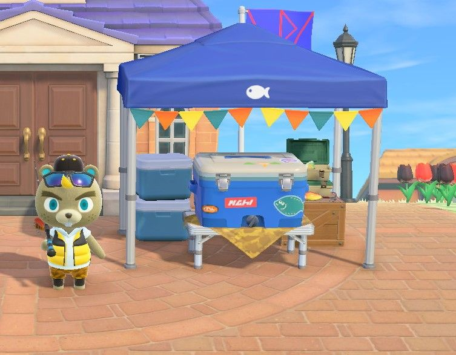
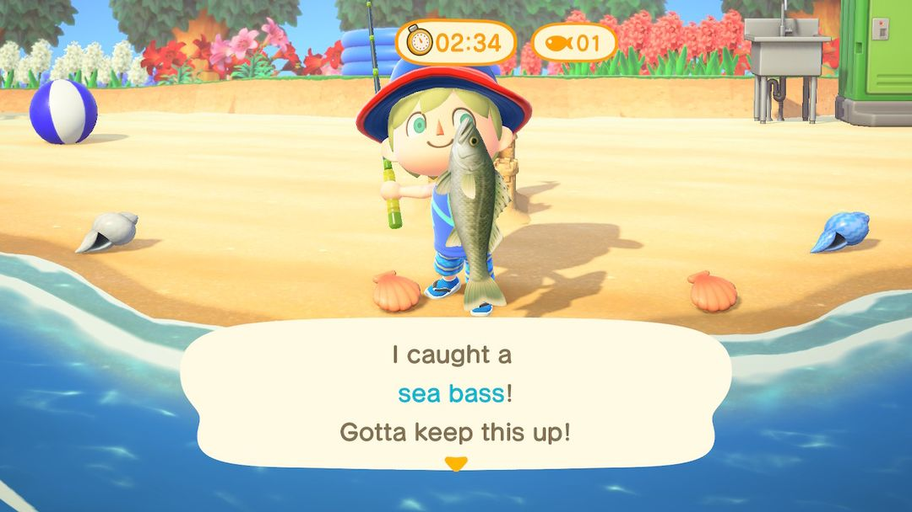
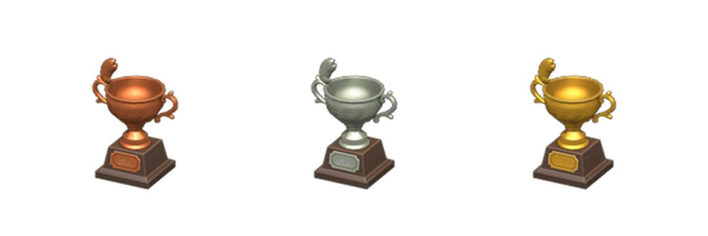

钓鱼大赛：哪天办、怎么计分、换什么
俞司廷一季来一次，三分钟一局，只数条数
钓鱼大赛一年办四场，1、4、7、10 月的第二个周六，南北半球同一天。比赛当天俞司廷在广场搭起帐篷，三分钟一局，钓上来一条算一条，鱼大鱼小、稀不稀有都一样记 1 分。攒够分数能找他换钓鱼主题的家具和衣服，总分到了 100、200、300 还会寄来铜、银、金三座奖杯。
想多拿分，要提前备的是鱼饲料，最好再多带一根钓竿；能约上别的岛的朋友一起来更好，报名费全免，每局还多 5 分。下面按当天的顺序说：在哪报名、怎么计分、和朋友怎么配合、怎么钓得快，最后是奖品。
01哪天办、在哪
钓鱼大赛固定在 1 月、4 月、7 月、10 月的第二个周六，南半球和北半球是同一天。游戏里按季节分别叫冬季、春季、夏季、秋季钓鱼大赛。比赛前一周左右，服务处旁边的布告栏会贴出通知，看到了就该把鱼饲料备起来了。
主办人俞司廷当天在服务处前的广场搭帐篷。上午 9 点开始报名，下午 6 点截止。截止以后他也不急着走，一直待到晚上 8 点，这段时间还能找他卖鱼、换奖品。
| 场次 | 日期 |
| 冬季钓鱼大赛 | 每年 1 月第二个星期六 |
| 春季钓鱼大赛 | 每年 4 月第二个星期六 |
| 夏季钓鱼大赛 | 每年 7 月第二个星期六 |
| 秋季钓鱼大赛 | 每年 10 月第二个星期六 |
每年具体落在哪天，可以翻动森圈圈的活动日历。

比赛当天，俞司廷在广场等你，钓到的鱼都放进他身后的保冷箱（图：Nookipedia）
02报名和计分
找俞司廷选「参加大赛」就算报名。当天第一局免费，之后每局 500 铃钱。下午 6 点前可以一直报，次数不限，只要铃钱够，钓多少局都行。
一局 3 分钟。钓上来的鱼直接进帐篷下的保冷箱，不占口袋，口袋塞满了也没关系，手里有一根钓竿就能上场。
计分很简单：一条鱼 1 分，鲈鱼和矛尾鱼算的分一样。一局钓到 3 条以上，额外再加 2 分。也就是说比的全是三分钟里能钓上几条，鱼大鱼小、稀不稀有都不影响分数，手快比运气要紧。
每局结束后要先把保冷箱清空，才能开下一局。清空的办法有两种：整箱卖给俞司廷，或者把鱼挑出来带走。俞司廷收鱼的价格是 Nook商店的 1.5 倍，不打算留的鱼直接卖给他最划算。

比赛中，屏幕上方是剩余时间和已经钓到的条数（英文版画面）（图：Nookipedia）
03约朋友一起钓
有别的岛的客人一起参加时，俞司廷不收报名费，钓几局都免费。所有人同时开始计时，开局不会等谁，报名前大家先各自站到水边，免得开局还在往海边跑。
除了各自的分数，这一局所有人加起来钓满 5 条，每人再加 5 分，你自己钓了几条都照样拿。几个人一起钓，5 条很容易凑够，等于每局白多 5 分。
注意只要还有一个人的保冷箱没清空，下一局就开不了。每局结束，大家都先回帐篷把鱼卖掉或带走，再一起报名。
04怎么钓得快
三分钟很短，大半时间都耗在找鱼影上，所以省时间的关键是别满岛找鱼。
先备好鱼饲料。沙滩上冒水的小孔能挖出蛤蜊，拿去 DIY 就是鱼饲料。往水面撒一份，很快就会冒出一个鱼影，站在原地就能接着甩竿。一局三分钟，手里备 10 份以上比较稳当。
找一段直的海岸。海里鱼影多，站在一段长而直的沙滩边甩竿最顺手。河道弯弯曲曲、码头位置又窄，鱼影常常冒在不好下竿的地方。
见鱼就钓，别挑。小鱼也是 1 分，看到小鱼影不用跳过，挑来挑去反倒耽误工夫。
多带一根钓竿。比赛中钓竿不会坏，但耐久照样在扣，可能一局刚结束它就正好断掉，下一局手边有备用的就不用临时去做。
小提示想留下的鱼，比如还没捐给博物馆的、图鉴里缺的，卖之前先从保冷箱里挑出来，不然会跟着整箱一起卖掉。
05奖品和奖杯
每攒到 10 分，就能找俞司廷换一件奖品。奖品一共 13 种，随机发，13 种都拿过一遍之后才会出重复的。当天没用完的分数会留着，下一场接着用。
13 种奖品分别是：钓竿架、有型保冷箱、钓鱼包、鱼形斜挎包、鱼儿T恤、鱼儿雨伞、鱼儿门牌、鱼儿地毯、鱼儿壁纸、鱼拓、鱼干、锚装饰品、鱼儿棒。
其中鱼儿棒是一根魔法棒，挥一下就能换上衣柜里存好的一整套衣服。
奖杯不用拿分去换。累计分数到了 100、200、300，俞司廷会分别寄来鱼儿铜奖杯、鱼儿银奖杯、鱼儿金奖杯。换奖品花掉的分、以前几场攒的分都算在累计里，所以换奖品不会拖慢拿奖杯。

从左到右：鱼儿铜奖杯、鱼儿银奖杯、鱼儿金奖杯（图：Nookipedia）
小提示一个人一局钓 10 条左右，加上满 3 条的 2 分，大约 12 分，攒到 300 分得二十多局。和朋友一起钓，每局多 5 分还不收报名费，能快不少。
动森圈圈 · 小程序和 iOS App 都搜「动森圈圈」